📝 Статьи
Статьи, руководства и заметки по OSINT, пентестингу, программированию и Linux.
📖
Статей пока нет
Библиотека пополняется
Графическое окружение (Desktop Environment, DE) — это набор взаимосвязанных компонентов, которые предоставляют пользователю графический интерфейс для взаимодействия с операционной системой. В мире Linux существует множество DE, каждое из которых имеет свои особенности, философию и целевую аудиторию. В этой статье мы рассмотрим 14 наиболее известных графических окружений.
Содержание
- GNOME
- KDE Plasma
- Xfce
- LXDE
- LXQt
- MATE
- Cinnamon
- Budgie
- Deepin (DDE)
- Enlightenment
- Pantheon
- Sugar
- Trinity (TDE)
- CDE
GNOME
📌 GNOME
- Первый выпуск:
- 1999 (GNOME 1); 2011 (GNOME 3); 2021 (GNOME 40)
- Поддерживаемые ОС:
- Linux, BSD, Solaris
- Последняя версия:
- 48
- Используют:
- Ubuntu (основная редакция), Debian, Arch Linux, openSUSE, RHEL, CentOS Stream
- Язык/Тулкит:
- C (GTK+ 4)
- Организация:
- GNOME Foundation
- Веб-сайт:
- https://www.gnome.org
GNOME (GNU Network Object Model Environment) — один из самых популярных и влиятельных графических окружений в мире Linux. Разрабатывается под эгидой GNOME Foundation с 1997 года. GNOME известен своим минималистичным и современным дизайном, ориентированным на простоту и удобство использования. С версии 40 (2021 год) GNOME претерпел значительные изменения в интерфейсе, перейдя к горизонтальной компоновке рабочих пространств и обновлённому стилю.
Философия
GNOME придерживается философии «меньше — значит больше». Интерфейс спроектирован так, чтобы не отвлекать пользователя от работы. Вместо традиционного рабочего стола с иконками, GNOME предлагает уникальный подход с Обзором (Activities Overview), где можно переключаться между окнами, рабочими пространствами и приложениями. GNOME Human Interface Guidelines (HIG) задают строгие стандарты для разработчиков приложений, обеспечивая единообразие интерфейса.
Ключевые особенности
- Обзор (Activities Overview) — центральный элемент навигации с поиском и переключением окон
- Динамические рабочие пространства (Workspaces) с автоматическим созданием/удалением
- GNOME Shell — современная оболочка на основе Clutter и Mutter
- Расширения (Extensions) — гибкая система дополнений через GNOME Extensions
- Встроенный поиск по всей системе (Tracker) с индексацией файлов
- Плавная анимация и прозрачность с аппаратным композитингом
- Поддержка Wayland по умолчанию (с GNOME 40+)
- Тёмная тема оформления (с GNOME 42+)
- Интеграция с онлайн-аккаунтами (Google, Microsoft, Nextcloud)
- GTK+ 4 — современный тулкит для построения интерфейса
✓ Достоинства
- Современный, чистый и интуитивный интерфейс
- Отличная поддержка Wayland и HiDPI-экранов
- Большое сообщество и корпоративная поддержка (Red Hat, Fedora, Ubuntu)
- Богатая экосистема приложений (GNOME Applications)
- Регулярные релизы каждые 6 месяцев (строгий график)
✗ Недостатки
- Высокое потребление ресурсов по сравнению с лёгкими DE
- Отход от традиционной метафоры рабочего стола может отпугнуть новых пользователей
- Меньше настроек «из коробки» по сравнению с KDE (всё через расширения)
- Некоторые расширения ломаются после обновлений GNOME Shell
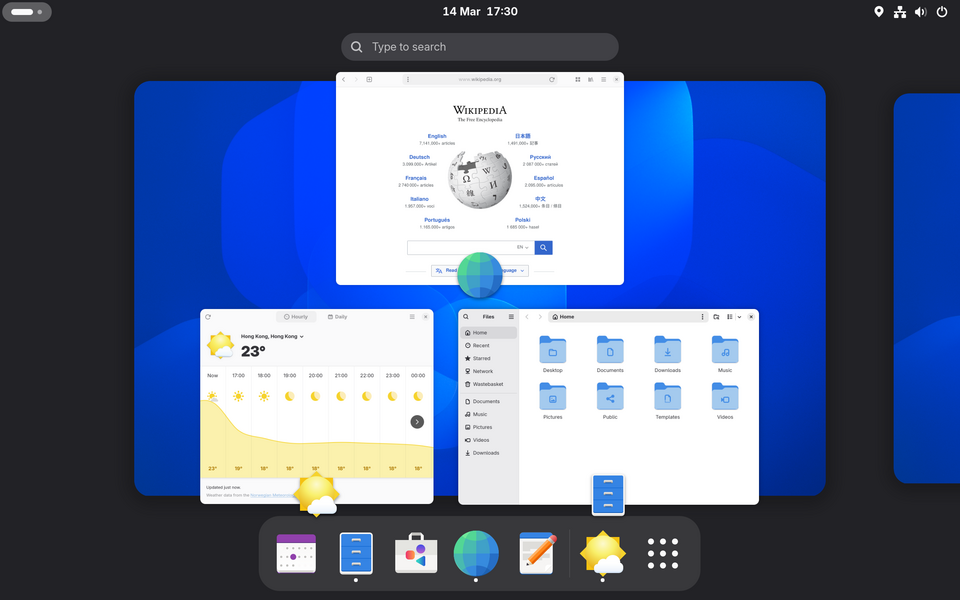
KDE Plasma
📌 KDE Plasma
- Первый выпуск:
- 1998 (KDE 1); 2011 (Plasma 1)
- Поддерживаемые ОС:
- Linux, BSD, Windows, macOS (частично)
- Последняя версия:
- Plasma 6.4
- Используют:
- KDE neon, Kubuntu, openSUSE, Fedora KDE Spin, Manjaro KDE, Debian KDE, Arch Linux, Garuda Linux
- Язык/Тулкит:
- C++ (Qt 6)
- Организация:
- KDE e.V.
- Веб-сайт:
- https://kde.org/plasma-desktop
KDE Plasma — графическое окружение, построенное на базе фреймворка Qt и библиотек KDE Frameworks. Plasma предлагает невероятно гибкий и настраиваемый рабочий стол, который может выглядеть и вести себя так, как нужно пользователю. Это одно из старейших и наиболее функционально насыщенных окружений в мире Linux. В 2024 году вышла Plasma 6 — крупное обновление с переходом на Qt 6 и Wayland по умолчанию.
Философия
Философия KDE — «мощность через гибкость». Пользователь может настроить буквально каждый аспект рабочего стола: от панелей и виджетов до эффектов окон и тем оформления. Plasma объединяет традиционный рабочий стол с современными возможностями, такими как KRunner (универсальный поиск/запуск), виджеты на рабочем столе и виртуальные рабочие столы. KDE не боится дать пользователю максимум контроля.
Ключевые особенности
- KRunner — универсальный поиск, запуск, калькулятор, конвертер и многое другое
- Виджеты (Plasmoids) — активные элементы на рабочем столе и панелях
- Активности (Activities) — различные профили рабочего стола для разных задач
- KWin — мощный композитный менеджер окон с эффектами (куб, переключение, тени)
- Невероятная настраиваемость: темы, стили, иконки, шрифты, панели, меню
- Поддержка Wayland и X11 (Plasma 6 — Wayland по умолчанию)
- Spectacle — встроенный инструмент для скриншотов с аннотациями
- Discover — центр управления приложениями и обновлениями (Flatpak, Snap, APT)
- KDE Connect — интеграция со смартфоном (звонки, SMS, файлы, уведомления)
- Baloo — файловый поиск и индексация содержимого
✓ Достоинства
- Максимальная гибкость и настраиваемость среди всех DE
- Богатый набор встроенных приложений (KDE Gear: 200+ приложений)
- Отличная производительность (Plasma — одно из самых лёгких среди полнофункциональных DE)
- Поддержка нескольких платформ (Linux, BSD, Windows)
- Активное сообщество и регулярные ежемесячные обновления
✗ Недостатки
- Обилие настроек может быть ошеломляющим для новичков
- Исторические проблемы со стабильностью при крупных обновлениях
- Фрагментация приложений (Qt vs GTK стилизация)
- По умолчанию может выглядеть «перегруженным» для некоторых пользователей
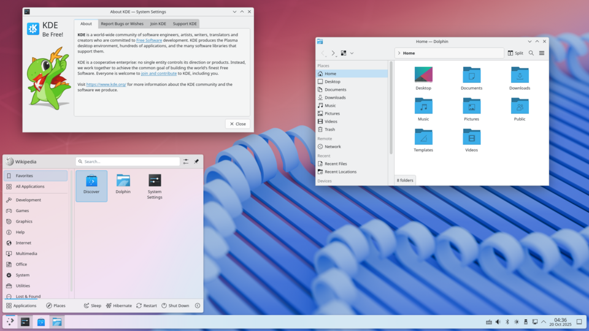
Xfce
📌 Xfce
- Первый выпуск:
- 1996
- Последняя версия:
- 4.20
- Используют:
- Xubuntu, Fedora Xfce Spin, Manjaro Xfce Edition, Debian Xfce, MX Linux, Linux Mint Xfce Edition
- Язык/Тулкит:
- C (GTK+ 3)
- Веб-сайт:
- https://xfce.org
Xfce — легковесное графическое окружение, созданное Olivier Fourdan в 1996 году. Xfce сочетает в себе скорость и низкое потребление ресурсов с традиционным, интуитивно понятным интерфейсом. Это идеальный выбор для старых компьютеров и пользователей, которым нужна эффективная рабочая среда без излишеств. Xfce версии 4.20, выпущенная в конце 2024 года, добавила экспериментальную поддержку Wayland.
Философия
Xfce следует философии Unix: «делай одну вещь и делай её хорошо». Окружение модульное — каждый компонент (панель, менеджер окон, файловый менеджер) можно заменить или настроить независимо. При этом Xfce сохраняет традиционную метафору рабочего стола, привычную пользователям Windows и классических DE.
Ключевые особенности
- Xfwm — легковесный менеджер окон с аппаратным композитингом
- Thunar — быстрый и простой файловый менеджер с плагинами
- Настраиваемые панели с поддержкой плагинов (часы, монитор, трей, меню)
- Рабочие пространства (виртуальные рабочие столы) до 32 штук
- Менеджер настроек — единый центр конфигурации системы
- Поддержка GTK+ 3 (и GTK+ 4 — экспериментально)
- Низкое потребление оперативной памяти (~300-400 МБ в покое)
- Работает на очень старом оборудовании (Pentium III, 256 МБ RAM)
✓ Достоинства
- Очень лёгкий и быстрый — отлично работает на старых ПК
- Стабильный и надёжный — минимальное количество багов
- Традиционный рабочий стол — привычный для пользователей Windows
- Модульная архитектура — можно заменить любой компонент
- Отличная поддержка в дистрибутивах (Xubuntu, Fedora Xfce Spin)
✗ Недостатки
- Менее современный внешний вид по умолчанию
- Меньше визуальных эффектов и анимаций
- Нет встроенного поиска по системе
- Некоторые возможности требуют ручной настройки
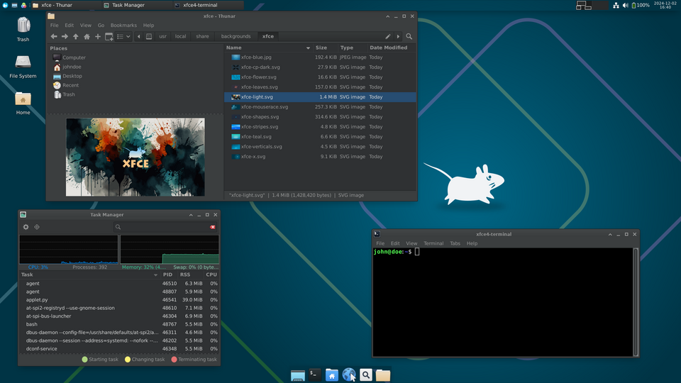
LXDE
📌 LXDE
- Первый выпуск:
- 2006
- Последняя версия:
- 0.10.1
- Используют:
- Lubuntu (до 18.10), Debian LXDE, openSUSE LXDE, Fedora LXDE Spin
- Язык/Тулкит:
- C (GTK+ 2)
- Веб-сайт:
- https://lxde.org
LXDE (Lightweight X11 Desktop Environment) — сверхлёгкое графическое окружение, созданное тайваньским разработчиком Hong Jen Yee (PCMan) в 2006 году. Оно изначально проектировалось для экономии ресурсов и работы на нетбуках, старых ПК и встраиваемых системах. LXDE использует GTK+ 2 и состоит из набора независимых компонентов.
Философия
LXDE создавался как лёгкая альтернатива для компьютеров с ограниченными ресурсами. Каждый компонент LXDE (PCManFM, LXPanel, LXSession) может работать независимо, что позволяет пользователю собирать своё окружение как конструктор. Простота и эффективность — главные приоритеты LXDE.
Ключевые особенности
- PCManFM — быстрый файловый менеджер с вкладками и поддержкой drag-and-drop
- LXPanel — панель с меню приложений, переключателем задач и системным треем
- LXSession — менеджер сессий с возможностью сохранения состояния
- LXRandR — инструмент для настройки мониторов и разрешений
- LXAppearance — настройка тем, шрифтов и значков
- Чрезвычайно низкое потребление памяти (~150-200 МБ в покое)
- Высокая скорость работы даже на Pentium II с 256 МБ RAM
✓ Достоинства
- Экстремально лёгкий — работает на любом оборудовании
- Очень быстрый запуск и отзывчивость интерфейса
- Традиционный интерфейс, знакомый пользователям Windows 9x/XP
- Модульная архитектура — возможность замены компонентов
✗ Недостатки
- Устаревший внешний вид (GTK+ 2)
- Разработка замедлилась (основной разработчик переключился на LXQt)
- Меньше возможностей по сравнению с новыми DE
- Ограниченная поддержка современных технологий
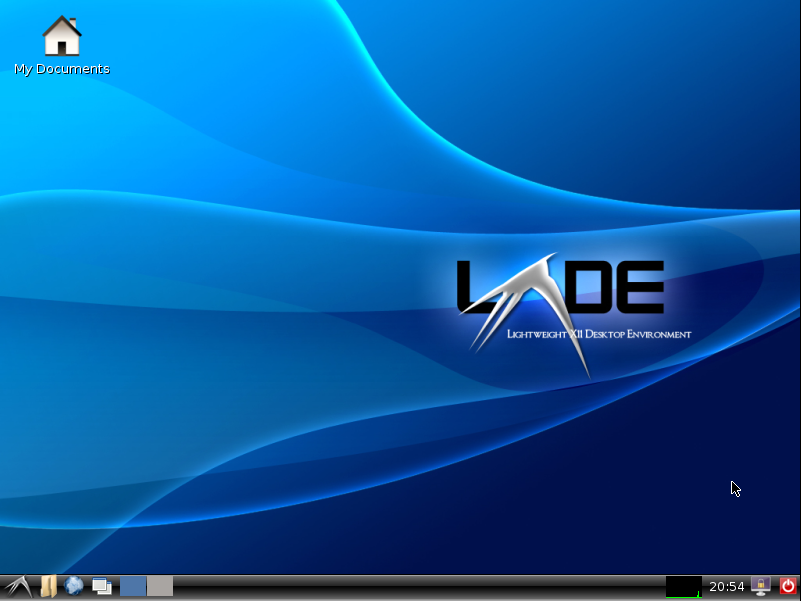
LXQt
📌 LXQt
- Первый выпуск:
- 2013
- Последняя версия:
- 2.0.0
- Используют:
- Lubuntu (с 18.10), Fedora LXQt Spin, openSUSE LXQt, Arch Linux, Manjaro LXQt
- Язык/Тулкит:
- C++ (Qt 6)
- Веб-сайт:
- https://lxqt-project.org
LXQt — легковесное графическое окружение, образованное в результате слияния проектов LXDE и Razor-qt в 2013 году. LXQt представляет собой современную переработку идей LXDE на базе Qt вместо GTK+. С версии 2.0.0 (2024) LXQt полностью перешёл на Qt 6, что обеспечивает современный внешний вид и производительность.
Философия
LXQt наследует философию LXDE (лёгкость и модульность), но использует Qt для более современного внешнего вида и лучшей интеграции с приложениями KDE. Окружение не стремится быть самым красивым — оно стремится быть эффективным и быстрым.
Ключевые особенности
- PCManFM-Qt — файловый менеджер на Qt с вкладками и поиском
- LXQt Panel — настраиваемая панель с меню, системным треем и плагинами
- Qt 6 (с версии 2.0.0) — современный фреймворк с поддержкой HiDPI
- Поддержка Wayland (экспериментальная)
- OpenBOX как менеджер окон по умолчанию
- Центр настроек LXQt Config Center
- Низкое потребление памяти (~200-300 МБ в покое)
✓ Достоинства
- Лёгкий и быстрый — достойный преемник LXDE
- Современный тулкит Qt 6 (HiDPI, темы, анимация)
- Модульность и настраиваемость
- Хорошая интеграция с KDE/Qt приложениями
✗ Недостатки
- Меньше сообщество, чем у LXDE или KDE
- Меньше встроенных приложений
- Иногда не хватает внимания к деталям
- Ограниченная поддержка Wayland
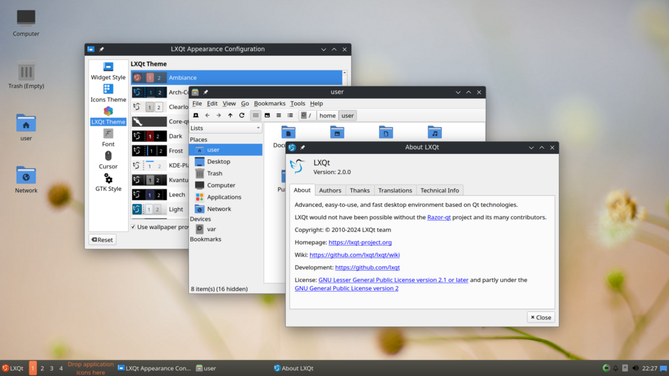
MATE
📌 MATE
- Первый выпуск:
- 2011
- Последняя версия:
- 1.28
- Используют:
- Ubuntu MATE, Linux Mint MATE Edition, Fedora MATE Spin, Debian MATE
- Язык/Тулкит:
- C (GTK+ 3)
- Веб-сайт:
- https://mate-desktop.org
MATE — графическое окружение, основанное на коде GNOME 2. Проект был начат в 2011 году аргентинским разработчиком Perberos (Lorenzo Carbonell) после того, как GNOME 3 радикально изменил интерфейс. MATE сохраняет классический рабочий стол GNOME 2 с двумя панелями и традиционным меню.
Философия
MATE сохраняет традиционную метафору рабочего стола, которая была популярна в эпоху GNOME 2, Windows XP и классических DE. Две панели, меню приложений, иконки на рабочем столе — всё это работает привычно и предсказуемо.
Ключевые особенности
- Marco — менеджер окон с композитингом (форк Metacity)
- Caja — файловый менеджер с расширениями (форк Nautilus)
- Две панели (верхняя и нижняя) с меню, треем и переключателем
- Меню приложений (традиционное, как в Windows)
- Центр управления MATE Control Center
- Поддержка GTK+ 3
- Pluma — текстовый редактор, Eye of MATE — просмотрщик изображений
✓ Достоинства
- Классический интерфейс — привычный и интуитивно понятный
- Умеренное потребление ресурсов
- Стабильность и надёжность
- Хорошая поддержка в дистрибутивах
✗ Недостатки
- Устаревший визуальный стиль
- Нет встроенной поддержки Wayland
- Меньше современных функций
- Некоторые компоненты используют устаревшие библиотеки
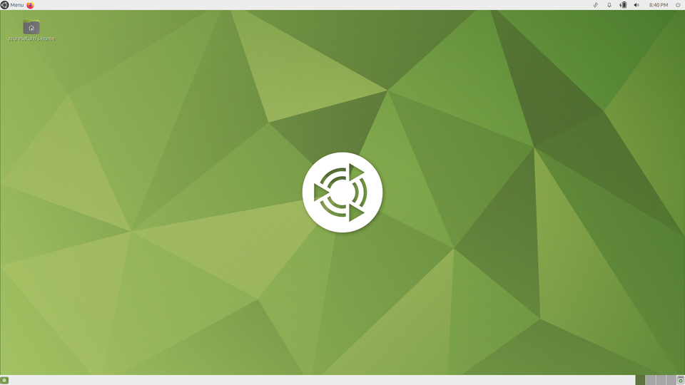
Cinnamon
📌 Cinnamon
- Первый выпуск:
- 2011
- Последняя версия:
- 6.4
- Используют:
- Linux Mint (по умолчанию), Fedora Cinnamon Spin, Debian Cinnamon, Arch Linux, Manjaro Cinnamon
- Язык/Тулкит:
- C (GTK+ 3), JavaScript
- Организация:
- Linux Mint (Clement Lefebvre)
- Веб-сайт:
- https://projects.linuxmint.com/cinnamon
Cinnamon — графическое окружение, разработанное командой Linux Mint во главе с Clement Lefebvre. Изначально Cinnamon был оболочкой для GNOME 3, но в 2014 году стал полноценным независимым окружением. Cinnamon сочетает современные технологии (3D-акселерация, анимация) с классическим интерфейсом рабочего стола.
Философия
Cinnamon создавался для того, чтобы предоставить современное графическое окружение с традиционной метафорой рабочего стола. Нижняя панель с меню «Пуск», иконки на рабочем столе, системный трей — всё это делает Cinnamon идеальным выбором для пользователей, переходящих с Windows.
Ключевые особенности
- Нижняя панель с меню приложений (аналог «Пуск»), переключателем задач
- Док (апплет панели) с избранными и запущенными приложениями
- Nemo — файловый менеджер с вкладками (форк Nautilus)
- Cinnamon Settings — центр управления со множеством настроек
- Muffin — менеджер окон с композитингом (форк Mutter)
- Десклеты (Desklets) — виджеты на рабочем столе
- Расширения (Spices) — апплеты, десклеты, темы и расширения
- Поддержка Wayland (с версии 6.0)
✓ Достоинства
- Привычный интерфейс — лучший выбор для мигрантов с Windows
- Отличная функциональность «из коробки»
- Богатый набор настроек без необходимости редактировать файлы
- Активная разработка и поддержка
✗ Недостатки
- Выше потребление ресурсов, чем у Xfce или MATE
- Зависимость от GTK+ 3
- Меньше сообщество расширений, чем у GNOME или KDE
- В основном ориентирован на Linux Mint
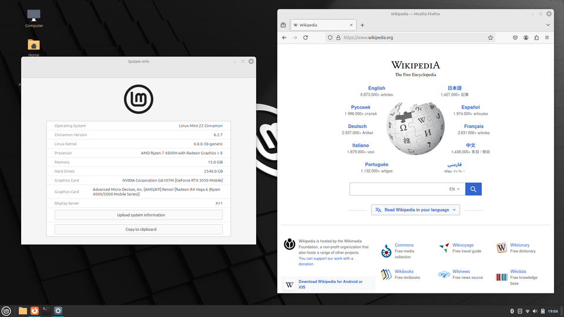
Budgie
📌 Budgie
- Первый выпуск:
- 2014
- Последняя версия:
- 10.9
- Используют:
- Solus, Ubuntu Budgie, Fedora Budgie Spin, Arch Linux, Manjaro Budgie, openSUSE
- Язык/Тулкит:
- C (GTK+ 3), C# (GTK#)
- Организация:
- Solus Project
- Веб-сайт:
- https://buddiesofbudgie.org
Budgie — современное графическое окружение, разработанное для Solus OS командой под руководством Ikey Doherty. Budgie предлагает элегантный, чистый интерфейс, который сочетает в себе простоту GNOME с дополнительными функциями и настраиваемостью.
Философия
Budgie стремится найти баланс между минимализмом и функциональностью. Интерфейс чистый и ненавязчивый, но при этом предоставляет все необходимые элементы управления. Budgie использует уникальный «пространственный» подход к организации рабочего стола.
Ключевые особенности
- Budgie Panel — настраиваемая панель с апплетами
- Budgie Menu — стильное меню приложений с категориями и поиском
- Рабочие пространства (Workspaces) с обзором
- Raven — боковая панель с уведомлениями, календарём и настройками
- Icon Task List — переключатель задач с иконками приложений
- Режим «мигания» окон при получении уведомления
- Поддержка Wayland
✓ Достоинства
- Современный, чистый и элегантный дизайн
- Интуитивно понятный интерфейс без излишеств
- Хорошая производительность
- Уникальные элементы (Raven, Icon Task List)
✗ Недостатки
- Меньше дистрибутивов с официальной поддержкой
- Ограниченная экосистема расширений и тем
- Меньше сообщество, чем у GNOME или KDE
- Исторически была привязана к Solus OS
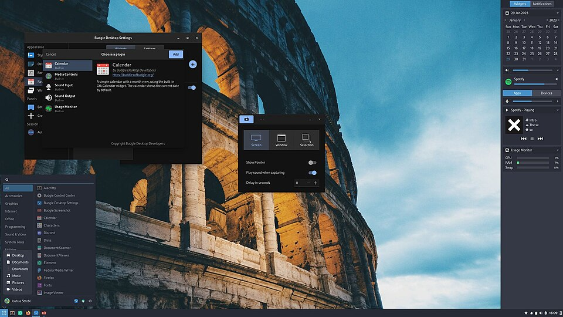
Deepin (DDE)
📌 Deepin (DDE)
- Первый выпуск:
- 2015
- Последняя версия:
- DDE 23 (25)
- Используют:
- Deepin, UbuntuDDE, Arch Linux, Manjaro Deepin
- Язык/Тулкит:
- C++ (Qt 5), Go
- Организация:
- Wuhan Deepin Technology Co., Ltd.
- Веб-сайт:
- https://www.deepin.org/en/dde
Deepin Desktop Environment (DDE) — графическое окружение, разработанное китайской компанией Wuhan Deepin Technology для дистрибутива Deepin. DDE известен своим красивым, современным дизайном, вдохновлённым macOS и Windows. Это одно из самых эстетически привлекательных графических окружений в мире Linux.
Философия
DDE ставит во главу угла эстетику и удобство. Каждый элемент интерфейса тщательно проработан визуально: анимации, тени, прозрачность, иконки. Deepin стремится предоставить пользовательский опыт, который не уступает коммерческим операционным системам.
Ключевые особенности
- DDE Dock — панель-док в стиле macOS с эффектами
- Launcher — полноэкранное меню приложений в стиле macOS Launchpad
- Control Center — унифицированный центр настроек в стиле Windows 10
- Deepin App Store — магазин приложений
- Встроенные приложения: Deepin Music, Deepin Movie, Deepin Terminal
- Плавные анимации, тени, прозрачность с аппаратным ускорением
- Поддержка Wayland
✓ Достоинства
- Один из самых красивых DE с продуманным дизайном
- Множество встроенных приложений
- Интуитивный интерфейс, понятный новичкам
- Хорошая поддержка русского языка
✗ Недостатки
- Высокое потребление ресурсов
- Сильная привязка к экосистеме Deepin
- Проблемы с совместимостью в не-Debian дистрибутивах
- Китайское происхождение вызывает вопросы о конфиденциальности
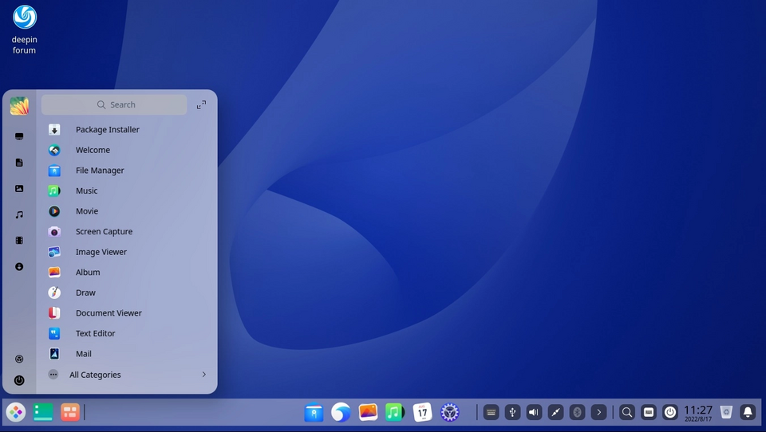
Enlightenment
📌 Enlightenment
- Первый выпуск:
- 1997
- Последняя версия:
- DR 0.26 (E26)
- Используют:
- Bodhi Linux, Arch Linux, Fedora, openSUSE, Debian
- Язык/Тулкит:
- C (EFL)
- Веб-сайт:
- https://www.enlightenment.org
Enlightenment (часто называют просто «E») — одно из старейших графических окружений, основанное Carsten Haitzler (Rasterman) в 1997 году. Уникальность Enlightenment в том, что это одновременно и оконный менеджер, и полноценное графическое окружение, построенное на собственных библиотеках EFL.
Философия
Enlightenment всегда был на переднем крае визуальных эффектов и инноваций. В конце 1990-х E16 поражал пользователей прозрачностью и анимацией, когда другие DE только осваивали базовые возможности. Enlightenment использует собственный тулкит EFL, что даёт полный контроль над производительностью и внешним видом.
Ключевые особенности
- EFL (Enlightenment Foundation Libraries) — собственный набор библиотек
- Встроенный композитный менеджер окон с множеством эффектов
- Гаджеты (Gadgets) — модульные элементы на рабочем столе
- Виртуальные рабочие столы в стиле «куб»
- Модульная архитектура
- Низкое потребление ресурсов при богатых визуальных эффектах
- Тематический движок Edje
✓ Достоинства
- Уникальный, непохожий на другие DE интерфейс
- Низкое потребление ресурсов при отличных визуальных эффектах
- Невероятная гибкость и настраиваемость
- Собственная библиотека EFL
✗ Недостатки
- Необычный интерфейс требует привыкания
- Сложность в настройке
- EFL-приложения несовместимы с GTK/Qt экосистемой
- Небольшое сообщество
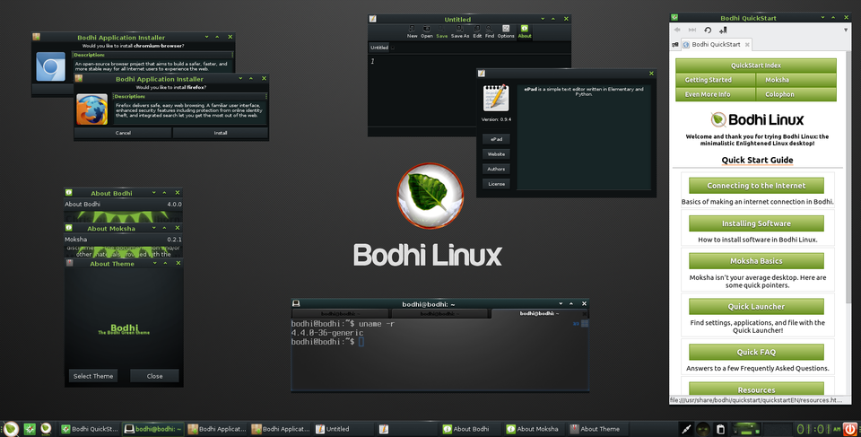
Pantheon
📌 Pantheon
- Первый выпуск:
- 2011
- Последняя версия:
- 8.0
- Используют:
- elementary OS, Fedora Pantheon Spin, Arch Linux, Manjaro Pantheon
- Язык/Тулкит:
- C (GTK+ 3), Vala
- Организация:
- elementary, Inc.
- Веб-сайт:
- https://elementary.io
Pantheon — графическое окружение, разработанное командой elementary OS. Pantheon известен своим элегантным дизайном, вдохновлённым macOS, и строгим следованием принципам пользовательского опыта (UX).
Философия
Pantheon следует философии «сначала дизайн». Каждая деталь интерфейса продумана с точки зрения удобства и эстетики. Pantheon придерживается концепции «pay-what-you-want» для приложений и стремится создать Linux-систему, которая не уступает macOS по качеству взаимодействия.
Ключевые особенности
- Wingpanel — верхняя панель с меню, индикаторами и уведомлениями
- Dock — нижняя панель-док с приложениями (в стиле macOS)
- Slingshot — полноэкранный лаунчер приложений с категориями
- Switchboard — центр настроек с панелями-плагинами
- Gala — оконный менеджер с композитингом
- Pantheon Mail, Calendar, Music, Photos — встроенные приложения
- Scratch — простой текстовый редактор
✓ Достоинства
- Красивый, целостный дизайн
- Отличное внимание к деталям и пользовательскому опыту
- Быстрый и отзывчивый интерфейс
- Хорошо интегрированные собственные приложения
✗ Недостатки
- Доступен в основном только в elementary OS
- Ограниченная настраиваемость
- Мало сторонних тем и расширений
- Небольшое сообщество
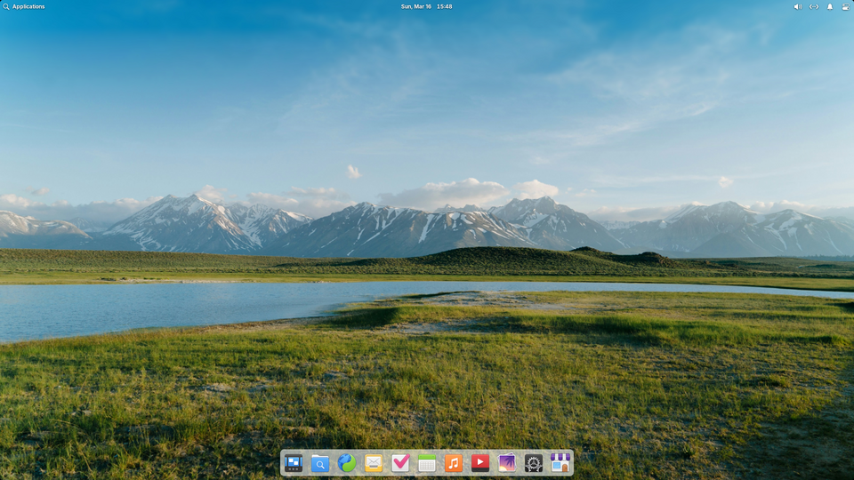
Sugar
📌 Sugar
- Первый выпуск:
- 2006
- Последняя версия:
- 0.121
- Используют:
- Fedora SoaS, Debian Edu, Ubuntu Sugar Spin, Arch Linux
- Язык/Тулкит:
- Python (GTK+ 3), HTML/JavaScript
- Организация:
- Sugar Labs
- Веб-сайт:
- https://sugarlabs.org
Sugar — уникальное графическое окружение, разработанное для проекта One Laptop Per Child (OLPC). В отличие от традиционных DE, Sugar создан специально для образовательных целей — для обучения детей в возрасте от 3 до 12 лет.
Философия
Sugar основан на педагогической философии конструктивизма. Интерфейс построен вокруг «Дома» (Home view) — сетки с активностями (Activities), а не приложениями. Нет папок, файлов, меню «Пуск» — только те инструменты, которые нужны ребёнку для обучения и творчества.
Ключевые особенности
- Home View — стартовый экран с активностями
- Activities — образовательные приложения
- Collaboration — встроенная поддержка совместной работы по сети
- Journal — журнал всех действий
- Neighborhood — просмотр других пользователей в сети
- Frame — панель с активностями, друзьями и устройствами
✓ Достоинства
- Уникальная образовательная среда, не имеющая аналогов
- Развивает логику, творчество и навыки сотрудничества
- Работает на очень старом оборудовании
- Не требует привычных навыков работы с ПК
✗ Недостатки
- Не подходит для повседневной работы и взрослых пользователей
- Ограниченная функциональность вне образования
- Необычный интерфейс требует переобучения
- Мало дистрибутивов с поддержкой
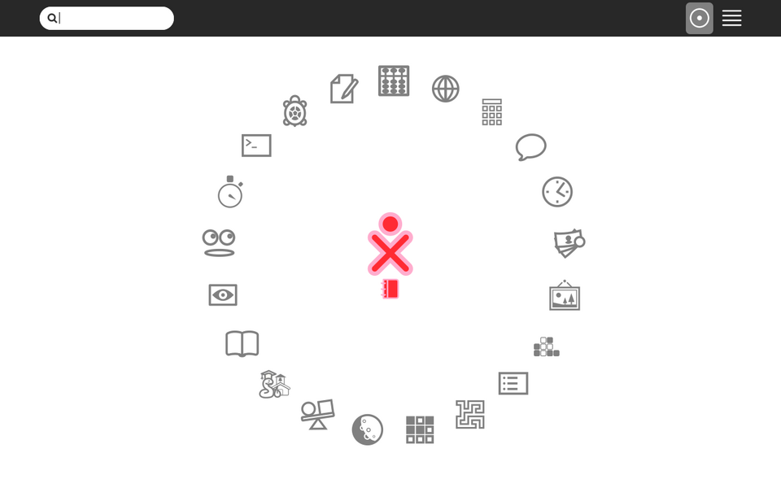
Trinity (TDE)
📌 Trinity (TDE)
- Первый выпуск:
- 2010
- Последняя версия:
- R14.1.2
- Используют:
- Debian TDE, openSUSE TDE, Ubuntu TDE, PCLinuxOS TDE
- Язык/Тулкит:
- C++ (Qt 3)
- Веб-сайт:
- https://trinitydesktop.org
Trinity Desktop Environment (TDE) — форк KDE 3.5.x, созданный после того, как KDE 4 кардинально изменил интерфейс. TDE сохраняет классический дизайн и функциональность KDE 3, продолжая развиваться и исправлять ошибки.
Философия
TDE сохраняет классическую парадигму рабочего стола KDE 3 — эпохи, когда KDE был простым, интуитивным и предсказуемым. Никаких революций, никаких радикальных изменений — только эволюционные улучшения и исправления.
Ключевые особенности
- Традиционный рабочий стол с меню K-Menu, иконками и панелями
- Kicker — классическая панель с меню, треем и переключателем задач
- KDE Control Center — единый центр настроек
- KPersonalizer — мастер настройки рабочего стола
- Совместимость с приложениями KDE 3
- k3b — мощный инструмент для записи дисков
- Konqueror — файловый менеджер и браузер
✓ Достоинства
- Классический KDE 3 — быстрый, стабильный, привычный
- Отличная совместимость с legacy-приложениями
- Низкое потребление ресурсов
- Активно поддерживается сообществом
✗ Недостатки
- Устаревший внешний вид (Qt 3)
- Нет поддержки Wayland и HiDPI
- Ограниченная поддержка современных приложений
- Мало дистрибутивов с поддержкой
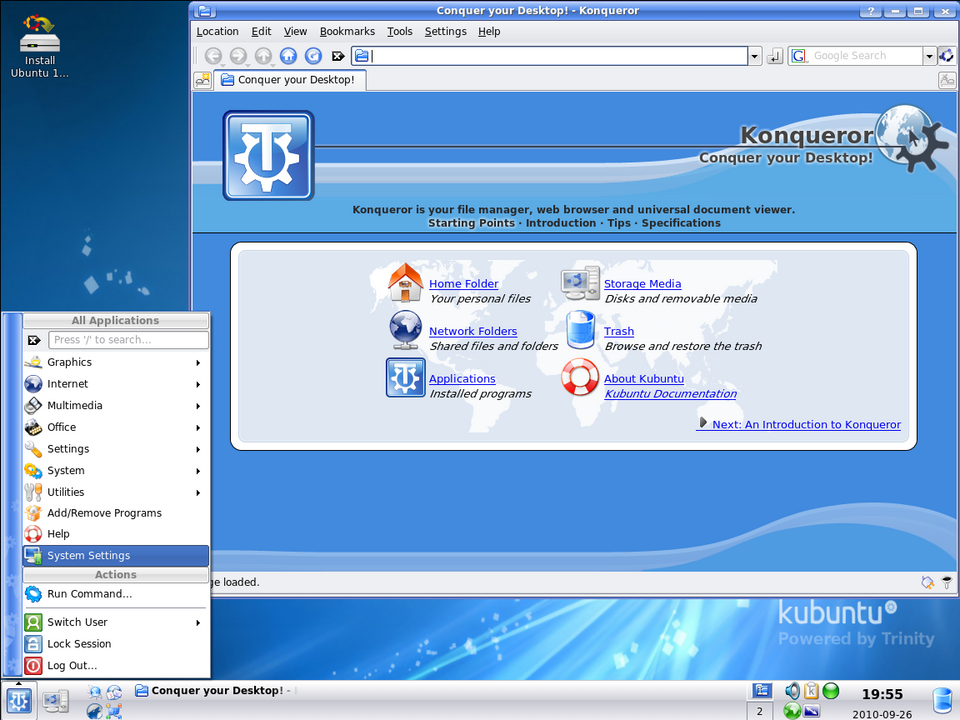
CDE
📌 CDE
- Первый выпуск:
- 1993
- Последняя версия:
- 2.5.2
- Используют:
- Debian, Arch Linux, Fedora, FreeBSD
- Язык/Тулкит:
- C (Motif/Xm)
- Организация:
- The Open Group / CDE Project
- Веб-сайт:
- https://sourceforge.net/projects/cdesktopenv
CDE (Common Desktop Environment) — классическое графическое окружение, разработанное в начале 1990-х годов консорциумом COSE (Hewlett-Packard, IBM, Sun, Novell, USL). С 2012 года CDE доступен с открытым исходным кодом под лицензией LGPL. Это окружение было стандартом для коммерческих Unix-систем в 1990-е годы.
Философия
CDE представляет собой классический Unix-рабочий стол 1990-х годов. Он спроектирован для профессиональных пользователей Unix-систем, где стабильность и предсказуемость важнее визуальных эффектов.
Ключевые особенности
- Менеджер окон Motif Window Manager (MWM)
- Панель Front Panel — настраиваемая панель с меню и приложениями
- File Manager — файловый менеджер в стиле Motif
- Text Editor, Calculator, Calendar, Mailer — встроенные приложения
- Session Manager — управление сессиями
- Style Manager — настройка цветов, шрифтов и поведения
✓ Достоинства
- Историческое значение — стандарт Unix 1990-х
- Чрезвычайно стабильный и предсказуемый
- Минимальное потребление ресурсов
- Работает практически на любом оборудовании
✗ Недостатки
- Очень устаревший внешний вид
- Нет поддержки современных технологий
- Нет композитинга и анимаций
- Неудобен для современных пользователей
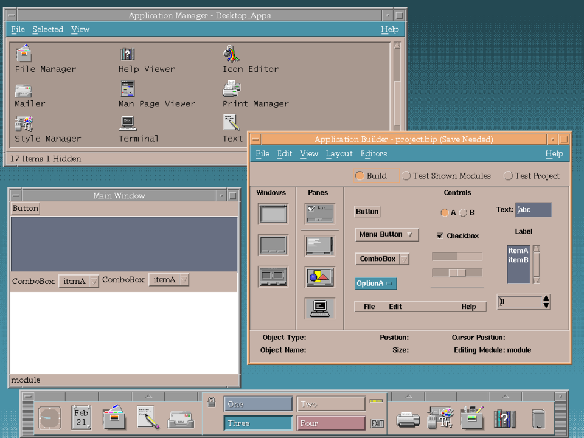
Заключение и рекомендации
Выбор графического окружения — это глубоко личное решение, которое зависит от ваших потребностей, привычек и технических требований.
Рекомендации по выбору
- Для новичков в Linux: GNOME, Cinnamon, Budgie — интуитивные интерфейсы, минимум настроек.
- Для опытных пользователей: KDE Plasma — максимальная гибкость и настраиваемость.
- Для старого оборудования: Xfce, LXQt, LXDE — минимальное потребление ресурсов.
- Для эстетов: Deepin (DDE), Pantheon (elementary OS) — красивейшие интерфейсы.
- Для минималистов: Enlightenment, LXQt — лёгкие, быстрые, без лишнего.
- Для образования: Sugar — уникальная среда для обучения детей.
- Для ностальгии: Trinity (TDE) или CDE — возвращают в прошлое.
Итоговая таблица популярности
| DE |
Популярность |
Активность разработки |
Сообщество |
Общий рейтинг |
| GNOME |
★★★★★ |
★★★★★ |
★★★★★ |
15/15 |
| KDE Plasma |
★★★★★ |
★★★★★ |
★★★★★ |
15/15 |
| Xfce |
★★★★☆ |
★★★★☆ |
★★★★☆ |
12/15 |
| Cinnamon |
★★★★☆ |
★★★★☆ |
★★★★☆ |
12/15 |
| MATE |
★★★★☆ |
★★★☆☆ |
★★★★☆ |
11/15 |
| Budgie |
★★★☆☆ |
★★★★☆ |
★★★☆☆ |
10/15 |
| Deepin |
★★★☆☆ |
★★★★☆ |
★★★☆☆ |
10/15 |
| LXQt |
★★★☆☆ |
★★★★☆ |
★★★☆☆ |
10/15 |
| Pantheon |
★★★☆☆ |
★★★☆☆ |
★★★☆☆ |
9/15 |
| LXDE |
★★★☆☆ |
★★☆☆☆ |
★★★☆☆ |
8/15 |
| Enlightenment |
★★☆☆☆ |
★★★☆☆ |
★★☆☆☆ |
7/15 |
| Trinity (TDE) |
★★☆☆☆ |
★★☆☆☆ |
★★☆☆☆ |
6/15 |
| Sugar |
★★☆☆☆ |
★★☆☆☆ |
★★☆☆☆ |
6/15 |
| CDE |
★☆☆☆☆ |
★★☆☆☆ |
★☆☆☆☆ |
4/15 |